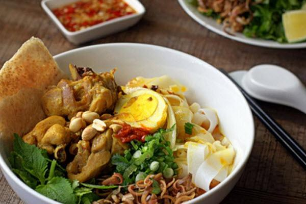
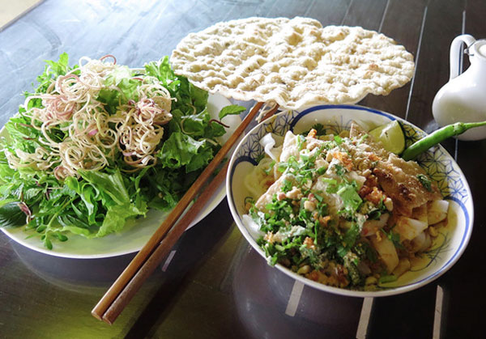
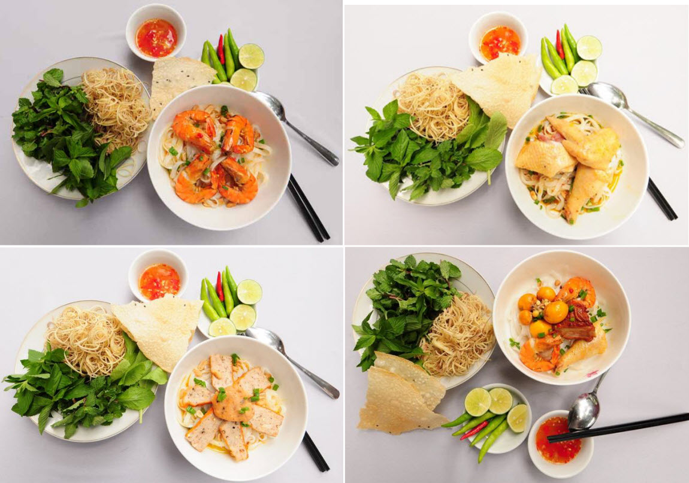

Nhắc đến miền đất Quảng Nam- Đà Nẵng, người ta không chỉ nhớ đến mảnh đất từng một thời anh hùng trong chiến đấu, mảnh đất của bạt ngàn những rừng keo xanh mướt, nhớ đến một Hội An cổ kính rực rỡ đèn lồng, là chỗ dừng chân lý thú của nhiều du khách trong và nước. Người ta còn nhớ lắm Quảng Nam-Đà Nẵng với một nền ẩm thực đặc sắc và đậm đà tình cảm giống hệt những con người nơi đây. Nếu như Hà Nội có phở, có cốm, Huế có cơm hến, bún bò, thì Quảng Nam-Đà Nẵng cũng không thua kém với bánh tráng cuốn thịt heo và Mì Quảng. Trong đó vẫn ấn tượng nhất ở món Mì Quảng này, sợi gần như phở, nhưng hương vì thì quả thực khác xa.

Từ miền quê đến thành phố, chỗ nào chúng ta cũng có thể tìm đuợc một quán mì, có quán vách nứa mái tranh chênh vênh bên sườn núi, có quán nằm lặng lẻ bên những cánh đồng mướt xanh, có quán lại lọt thỏm giữa ồn ào phố thị… Tuy vậy, Mì Quảng ở đâu cũng giữ đuợc những nét rất đặc trưng, ngon miệng, hấp dẫn mà đằm thắm và gần gũi. Không một ai biết từ bao giờ Mì Quảng lại trở thành người bạn tâm giao của con người miền Trung, chỉ có một số tài liệu còn chép lại thì có Mì Quảng bắt nguồn từ sự giao thoa văn hóa Việt - Trung. Trung Quốc vốn là một đất nước có nền ẩm thực phong phú, đặc biệt là với các nguyên liệu từ lúa gạo người ta có thể biến tấu ra hàng trăm món khác nhau, mà các món mì lại càng chiếm ưu thế. Khi người Trung Quốc vào thành phố Hội An bởi các công việc giao thương, họ đã mang sang cả một chút ẩm thực dân tộc, mà người Việt ta thì chẳng bao giờ thôi không sáng tạo. Từ món mì truyền thống của họ ta cũng làm món mì của ta, nhưng hương sắc vị thì lại khác hẳn, ngon và hợp khẩu vị của dân tộc mình và sau nhiều đời thêm bớt, phát triển, ngày nay ta đã có một món ăn thật đặc sắc và đáng để nghiên cứu thưởng thức.
Cũng như phở, bún hay hủ tiếu, Mì Quảng cũng được chế biến từ gạo nhưng lại có sắc thái và hương vị riêng đặc biệt. Bắt đầu từ khâu chọn gạo cho đến nước nhưng và các loại gia vị, phụ liệu khác đều rất đặc trưng. Mì Quảng là món ăn bình dân, mộc mạc, vì thế cách chế biến cũng khá đơn giản nhưng đòi hỏi sự khéo léo và tinh tế. Gạo ngon sau khi đem ngâm, xa thật mịn rồi tráng. Ngày xưa người ta xay bột bằng cối đá, thời nay, với sự hiện đại của khoa học kỹ thuật, cối đá đã thay bằng máy xay có động cơ. Tráng bánh lên một màng vải căng trên nổi nước lớn đang sôi. Sau khi tráng một lớp đầu phộng đã khử chín lên lá mì, gấp lại rồi xắt thành từng cọng như cọng phở. Vậy là xong bước chuẩn bị mì. Phần tiếp theo là chuẩn bị nước dùng và nhân mì. Nước dùng phải được nấu nhiều xương cho ngọt, thêm tí dầu hạt điều đi nước dùng có màu tươi. Phần quan trọng thứ hai trong tô mì là "nhân", gồm có thịt gà, thịt bò, sườn heo non, tôm. Các thứ này được xào cùng với khóm (dứa cắt nhỏ, tạo thành các loại thịt cùng với vị ngọt hơi chua của khóm. Mì Quảng không sử dụng nước dùng nhiều như hủ tíu và phở, nên trước khi chế nước dùng vào, sợi mì phải được trụng nước nóng hơi lâu. Nhân được xếp sao cho đẹp, nhìn phải bắt mắt, vì vậy thịt và tôm phải để trên mặt cho đều rồi mới cho nước dùng, sau cùng rải đậu phộng lên. Giã đậu phộng để ăn mì Quảng cũng là một nghệ thuật. Đậu không được đảm nhuyễn, chỉ cà cho vỡ hai ra đế người ăn nhai cùng với bánh tráng phát ra âm thanh mới thú vị. Ăn mì Quảng pha kèm bánh tráng gạo miền Trung nướng bằng lửa than mới ngon. Rau ăn với mì Quảng là rau húng cây, húng lúi, xà lách cùng với chuối cây xắt mỏng trộn vào nhau thành một hỗn hợp rau.
Tô mì chẳng giống phở, cũng chẳng giống bún, cái vị đậm của nước lèo, lẫn mùi thơm của hành ngò, rồi tiêng húp xì xoạp làm nên nét hấp dẫn của tô mì… Còn nữa, mì ngon là ngon từ lá mì, lá mì không được dẻo quá mà cũng không quá tơi, tô mì phải có bố cục đẹp mắt. Khi bạn trộn lên, nếu lá mì bị gẫy ra tức là đã mất ngon đi cả 9 phần, về nước lèo, nước phải trong nhưng đảm bảo độ béo và ngọt. Nhiều gia vị quá, nước lèo làm cho tô mì loè loẹt và đôi khi át mất hương vị đồng quê. Gắp một đũa mì cho vào miệng cắn một miếng ớt thật cay, húp ngụm nước lèo cho phát ra tiếng "soạt", khi đó mới thấy cái thú, mới thấy cái ngon đầy miệng. Nhìn tô mì đầy đặn, bê¬n những chú tôm đỏ mọng là một lới rau ngò xanh xanh, dăm ba hạt đậu phộng được rải đều, làm cho ta cảm thấy vui mắt và chỉ muốn ăn ngay. Mì Quảng phải ăn ngay, ăn từ khi còn nóng, để nguội sẽ mất ngon, lá mì sẽ bị tơi ra, rau sống héo đi, cái mùi thơm giòn của rau, đậu sẽ bị tản bớt… Có một điều, ăn mì Quảng mà thiếu bánh tráng thì coi như không đúng cách. Bánh tráng cho ta cái giòn giã và thơm tho, cái béo của dầu mỡ quyện với cái béo của gạo nướng trong bánh tráng càng làm cho người ăn có cảm giác ngon miệng mà không ớn. Ngày nay, mì Quảng đã được các chủ quán thêm vào một số "biến tấu" trong cách trình bày cũng như thành phần gia vị, cọng hành hương, vài cục thịt mỡ nấu nhừ.
Những ngày làm mía, gặt ruộng, đến đám giỗ, cưới hỏi, chiêu đãi bạn bè…Mì Quảng hiện diện trong bữa ăn chính như một thói quen không đổi của người Quảng Nam. Vừa ngon, vừa rẻ, vừa no lâu. Mì Quảng đã làm nên một nét hấp dẫn rất riêng của Đà Nẵng. "Thương nhau múc chén chè xanh, ăn tô mì Quảng để anh ăn cùng".
Địa chỉ quán ăn
Mỳ Quảng Giao Thủy: 04 Hoàng Văn Thụ, Hải Châu, Đà Nẵng. Hotline: 0984809987
Mỳ Quảng Quê: 258 đường Đống Đa, quận Hải Châu, Tp Đà Nẵng. Hotline: (02363) 532 258